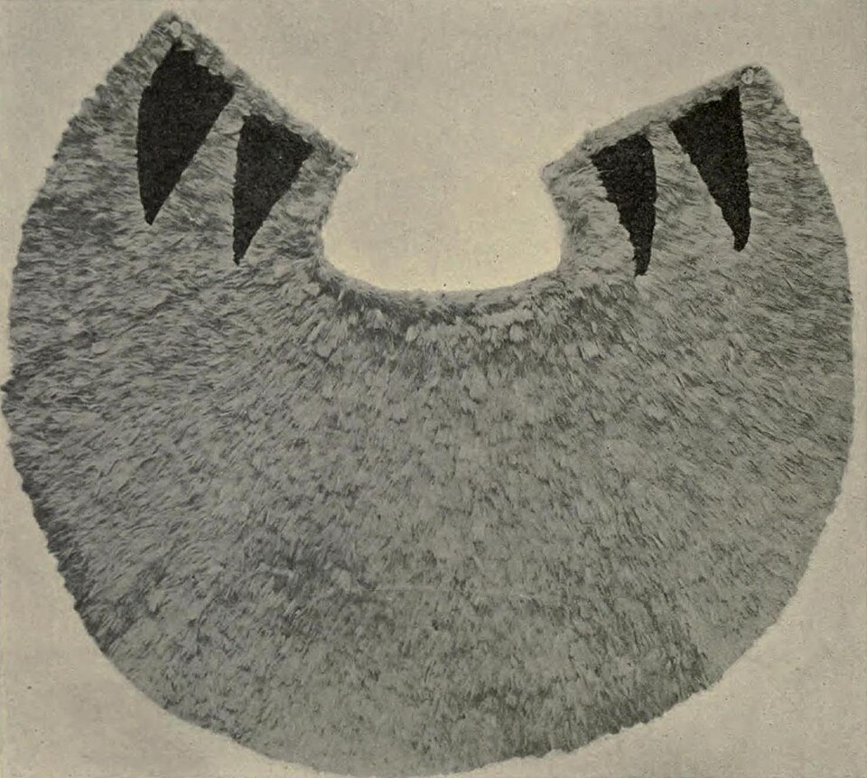

Chiefess Kamakahelei Middle School
Place: Chiefess Kamakahelei Middle School, Puhi, Kauaʻi
Type: Public middle school / commemorative place name
Namesake: Kamakahelei, aliʻi nui of Kauaʻi and Niʻihau and mother of Kaumualiʻi
Story it tells: How a modern Kauaʻi school carries the name of the powerful chiefess who ruled the island during its first recorded encounter with Europeans and whose son became Kauaʻi's last independent ruler.

Chiefess Kamakahelei Middle School in Puhi is named for Kamakahelei, the powerful aliʻi nui who ruled Kauaʻi and Niʻihau during the late eighteenth century. Born into one of Hawaiʻi's highest-ranking chiefly lines, Kamakahelei inherited rule of Kauaʻi and became one of the island's most consequential leaders during a period of growing conflict between the islands and the beginning of sustained contact with the outside world.
Kamakahelei was ruling Kauaʻi when Captain James Cook arrived at Waimea in 1778, marking the first recorded European contact with the Hawaiian Islands. Traditions preserved about the encounter describe other chiefs considering resistance to the unfamiliar ships and their crews, while Kamakahelei counseled against fighting them. The encounter remained peaceful, placing Kamakahelei at the center of one of the great turning points in Hawaiian history.
Kamakahelei married Kāʻeokūlani, a high chief of Maui and brother of Kahekili II, strengthening connections between powerful chiefly lines across the islands. Their son was Kaumualiʻi, who succeeded his mother and eventually became the last independent ruler of Kauaʻi and Niʻihau.
More than two centuries after Kamakahelei's rule, her name was chosen for a new public middle school built on the Puhi plain. Chiefess Kamakahelei Middle School opened in 2000, and educator Pohaku Nishimitsu, the school's first student activities coordinator, selected the chiefess as its namesake. The choice gave a modern school serving Kauaʻi students the name of one of the island's most important female rulers.
Today, Kamakahelei's name is encountered daily by students and families who may be far removed from the chiefly world in which she lived. The school transforms her name from one found in histories of Cook and Kaumualiʻi into part of the everyday landscape of modern Kauaʻi, preserving the memory of the woman who ruled the island at the moment Hawaiʻi's relationship with the outside world began to change forever.